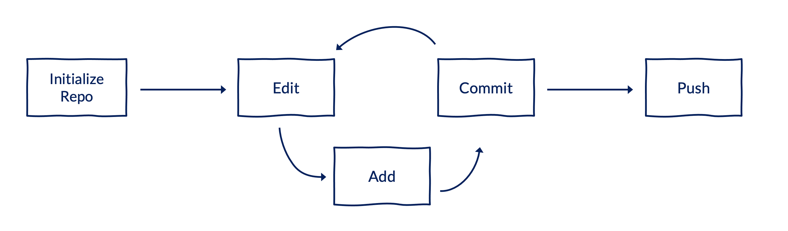
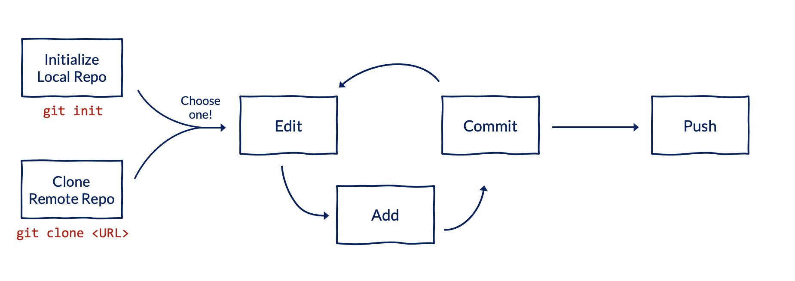
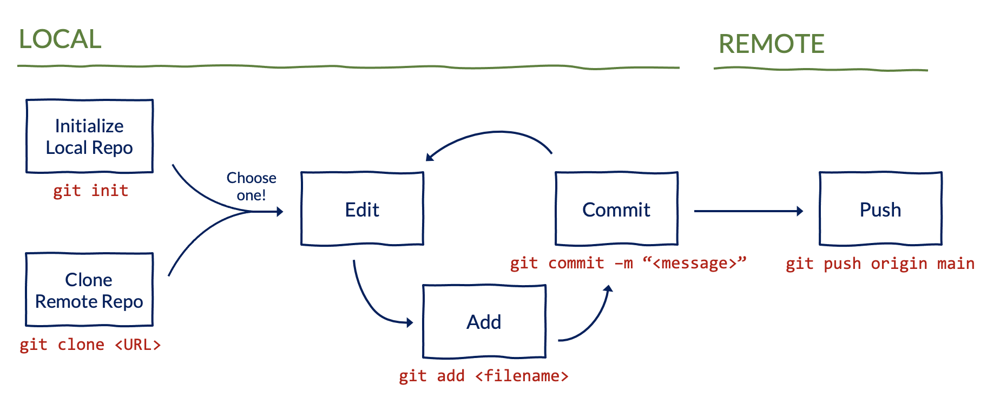
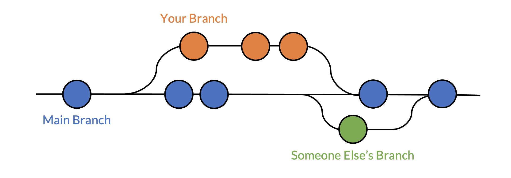

Git and Github at Urban
This guide is intended to help Urban Institute employees get started with Git and GitHub.
We know that learning these tools can be a challenge, but we’re here for you! Drop a message in the #github Slack channel if you run into issues, and we will be happy to help out.
Git vs. GitHub
Git is a free, open source distributed version-control system for tracking changes in code. Because Git is installed and maintained locally on your computer, it can be used without an internet connection. It’s like a turbo-charged version of Word’s track changes for code.
GitHub is a cloud-based, online hosting service for version control using Git. It also contains useful tools for collaboration and project management. It’s like a turbo-charged version of Box for sharing Git repositories (i.e. folders tracked by Git).
Don’t get bogged down in the details – just remember that Git is a local version control system, while GitHub is a hosting site for backup and collaboration. Together, they pack a powerful punch.
Who uses Git and GitHub?
Urban has more than 200 GitHub users and 1,000 repositories. A few examples of teams that use Git and GitHub include:
- Urban–Greater DC, led by Peter Tatian (Metro), has its own GitHub organization and 46+ repositories for all of its collaborated projects. The group mostly uses SAS.
- Matthew Buettgens (HPC) and Michael Simpson (HPC) use Git and GitHub to coordinate and document work on the Health Insurance Policy Simulation Model (HIPSM) by the modeling team. The team mostly uses Stata.
- Researchers in EDP host Stata and R scripts used to clean the data that powers the Education Data Portal on GitHub. They also publish analyses from these data publicly on GitHub alongside biweekly essays.
- The COMMS team develops and shares data visualizations with Git and GitHub. The team mostly uses JavaScript.
- The Data Science team requires the use of Git and GitHub for projects. The team mostly uses R and Python.
Why version control?
Version control is a system for managing and recording changes to files over time. Good version control can:
- Limit the chance of making a mistake
- Maximize the chance of catching a mistake when it happens
- Create a permanent record of changes to code
- Easily undo mistakes by switching between iterations of code
- Allow multiple paths of development while protecting working versions of code
- Encourage communication between collaborators
- Be used for external communication

Why distributed version control?
Git is a distributed version control system. Why is this important?
Centralized version control is a system where version control and all files are stored in one centralized place. Centralized version control, like Box, is good for sharing a Word document but terrible for collaborating on code because people can overwrite other people’s code!
Distributed version control is a system where the version control system and all files are mirrored on every user’s computer. This allows for the simultaneous editing and running of code. It also allows for code development without sacrificing a working version of the code.
Using the command line
This guide shows how to use Git from the command line, which may look scary but we promise will be useful to learn! There are other tools to interact with Git using a visual interface (like Github Desktop, or RStudio’s built in Git integration). These tools may be helpful, but we recommend starting by reading this guide and understanding how Git works. Under the hood, all those visual interfaces just use the command line.
To run Git commands from the command line on a Windows computer, right click within any directory (i.e. folder) on your computer, and select Git Bash Here. Alternatively, if you already use an IDE like RStudio or VS Code, you can use the terminal within these IDEs directly to run commands. You can also read more about the command line in this tutorial.
Throughout this guide, code chunks that begin with $ indicate when you should run a command from the command line, although you should not include the $ symbol when submitting the command:
::: {.cell}
$ <run_this_command> :::
<> are used to indicate blanks that need to be filled in. Don’t actually submit <>. Instead, replace them with the desired text.

Registration
This only needs to happen once in your lifetime!
GitHub account
Create a GitHub account. There is no need to associate your account with the Urban Institute or an Urban Institute email address. Many people want to use GitHub for personal projects too.
After creating an account, fill out Urban’s GitHub intake form to join Urban’s primary GitHub organization, UI-Research. Note that Urban has another GitHub organization, UrbanInstitute, that is primarily used for public-facing repositories.
Authentication and tokens
You will need to create a personal access token (PAT) to replace your password and provide enhanced security. Since 2021, GitHub has required PATs to perform Git operations. To create a PAT:
Log into your GitHub account. Navigate to the drop-down menu in the top right corner with your profile picture. Select Settings near the bottom of this drop-down.
From your account settings, navigate to Developer Settings, at the bottom of the menu on the left.
From the developer settings, navigate to Personal Access Tokens in the menu on the left.
Click Generate new token. You may be prompted to re-enter your GitHub password.
Add a note to label the token. This is useful if you intend to generate multiple tokens for different uses. Then, set a time limit for the token – we recommend 90 days. Finally, select the scope of permissions you would like to give the token. The default is selecting all options. Then click Generate token.
The generated token will appear. Make sure to copy and safely store the token when it appears, as you will not be able to view it again. Note that if you lose your token, you can always generate a new one. Use this in place of your GitHub password when prompted by Git (or when using the GitHub API).
The first time you attempt to clone (copy to your computer) a repository that is private on GitHub, Git will prompt you for your credentials. Your username is just your GitHub username. Your password should be the PAT that you created.

Installation
This only needs to happen once per computer!
Installing Git
Install Git for Windows (or follow the relevant steps if you’re not using a Windows computer).
Confirm that the installation was successful by running the following from your command line:
::: {.cell}
$ git --version:::
The version of Git that you installed (rather than an error) should show up.
Configuring Git and GitHub
Link your local Git to GitHub by submitting the following with your GitHub username in quotes:
::: {.cell}
$ git config --global user.name "<your_github_username>":::
You should also submit the email address linked to your GitHub account:
::: {.cell}
$ git config --global user.email "<your_email_address>":::
Ensure that your GitHub username and email address are associated with your computer:
::: {.cell}
$ git config --list:::
The output should include user.name=<your_github_username> and user.email=<your_email_address>.
Basic workflow
The big picture
Before diving into syntax, keep in mind the big picture:
- Create a repository for a project.
- Tell Git which files to track.
- Take a snapshot of tracked files and add a commit message.
- Send those snapshots to a shared folder so others can access them.
- Repeat, repeat, repeat.


Creating a new repository
This only needs to happen once per repository!
OPTION 1: If you do not already have a project folder and are starting from scratch:
Under UI-Research on GitHub, click the green button titled New Repository (top, right corner). Give the repository a name, and click Create Repository.
On GitHub, navigate to the repo that you just created and click the green button titled Code (top, right corner). Copy the HTTPS remote URL. It will look like
https://github.com/UI-Research/<name_of_your_repo>.git.Navigate to the directory where you want to keep the repo on your computer. Using the URL that you copied in the last step, clone the repository:
::: {.cell}
$ git clone <remote_url_for_your_repo>:::
OPTION 2: If you already have a project folder on your computer and want to turn that folder into a GitHub repository:
Under UI-Research on GitHub, click the green button titled New Repository (top, right corner). Give the repository the same name as your directory, and click Create Repository.
On GitHub, navigate to the repo that you just created and click the green button titled Code (top, right corner). Copy the HTTPS remote URL. It will look like
https://github.com/UI-Research/<name_of_your_repo>.git.Navigate to the root of your project folder and initialize a local repository:
::: {.cell}
$ git init:::
Sync the URL for the remote repository that you copied in Step 2:
::: {.cell}
$ git remote add origin <remote_url_for_your_repo>:::
Cloning an existing repository
This only needs to happen once per repository per computer!
If you want to clone a repository that already exists on GitHub to your computer:
On GitHub, navigate to the repo, and click the green button titled Code (top, right corner). Copy the HTTPS remote URL. It will look like
https://github.com/UI-Research/<name_of_your_repo>.git.Navigate to the directory where you want to keep the repo on your computer. Using the URL that you copied in the last step, clone the repository:
::: {.cell}
$ git clone <remote_url_for_your_repo>:::


Adding collaborators to a repository
To share the repository with others, navigate to the GitHub page for the repo. Then, click Settings (along the top) and Collaborators and Teams (along the left side panel). Click the relevant buttons to add people (individual users) or teams (groups of users).
Teams are useful if you have a set of users who will all need access to multiple repositories. Creating a team saves you from having to add each user individually for each new repo. Urban has 50+ teams on GitHub for specific projects (e.g. Education Data Team for folks across TECH, COMMS, and EDP who work on the Education Data Portal) or teams or centers within Urban (e.g. Data Science or HFPC).
Basic commands and workflow
The most common Git commands you will use include git add, git commit, and git push. These tell Git which files to track, when to take snapshots of those files, and when to send those snapshots to GitHub for others to see.
git addadds a file to Git’s staging area. It tells Git, “hey, look at this file.”::: {.cell}
$ git add <file_name>:::
git commitcommits changes made to added files to the repository. It says, “hey, take a snapshot of the files I’ve added.”::: {.cell}
$ git commit -m "<message>":::
git statusprints out important information about your repo. Use it before and after most commands to understand how files have changed in your repo.::: {.cell}
$ git status:::
git pushpushes your local commits to the remote repository on GitHub. It says, “hey, push all my snapshots to a shared folder so that other people can see them.” The command below will push to the defaultmainbranch of your repo. Note that for repositories created before August 2021, the default branch was calledmaster, instead ofmain.::: {.cell}
$ git push origin main:::
Before running the git push command, your code and commits could only be accessed on your local computer.


Collaborative workflow
The main benefit of version control is making sure you and your collaborators are all using the latest and greatest version of your code. When working individually, this will just be your local version. When working with others, you should pull down the latest changes that anyone has pushed remotely before making further updates.
git pullcopies the latest changes that anyone has pushed remotely to your local repository. It says, “hey, replace my local version with the current version on GitHub.” The command below will pull the latest version on themainbranch.::: {.cell}
$ git pull origin main:::

Branches
So far in this guide, we’ve been working off a single main branch. By using multiple branches, you and your collaborators can update existing code or add new code without the fear of overwriting each others’ files. Branches let you say “hey, I’m going to leave the main version of the code alone while I try some things out over here.”

git checkoutswitches your local version to different branch. The-bflag in the command below tells Git to first create a new branch and then switch to it. When you first create a new branch, it will be identical to the local version of the branch that you switched from (typically themainbranch).::: {.cell}
$ git checkout -b <name_of_new_branch>:::
git branchwill tell you what branch you are currently on. It’s always a good idea to rungit branchbefore pushing.::: {.cell}
$ git branch:::
git pushsends your local commits to the remote repository, as noted earlier. To push to a specific branch, specify the branch name in the command. If you don’t explicitly specify a branch, Git will push to whichever branch you are on.::: {.cell}
$ git push origin <name_of_new_branch>:::

Pull requests
When you’re ready to share the updates on your branch with others, open a pull request. This says, “hey, I’d like to merge the work on my branch into the main (or some other) branch.” Pull requests makes it easy for others to see the changes you’ve made and provide feedback. They also help organize multiple related commits into a single update.
The most common way to open, review, and merge a pull request is through GitHub, rather than from the command line. Different teams develop their own standards for branching and pull requests, but here’s a common workflow:
From your repo, click Pull requests (along the top) and then click the green New pull request button.
Select the branch with your work. By default, GitHub will create a pull request into the
mainbranch.Review the files that have changed to ensure you don’t accidentally merge files you don’t intend to into the
mainbranch.Click Create pull request. Write a summary of the updates included in the pull request and why you made those updates. You can also add Reviewers (along the right panel) to notify others that you would like them to look at your changes.
To make changes to the code included in a pull request if (e.g. if a reviewer requests updates), simply push to the same branch. The pull request will automatically be updated to reflect these changes.
Once approved, merge the pull request into the
mainbranch by clicking the green Merge or Rebase and merge button.Once your branch has been merged, delete it.

After merging the pull request, you should return to the main branch and sync your local directory with the merged changes:
git checkoutswitches your local version to a different branch.::: {.cell}
$ git checkout main:::
git pullcopies the latest changes from the pull request that you just merged remotely to your local repository. If you don’t explicitly specify a branch when running thegit pullcommand, Git will pull from the branch you are currently on.::: {.cell}
$ git pull:::
Summary of commands
The table below summarizes the commands that we’ve discussed in this guide. There are also tons of Git cheat sheets available online (e.g. from GitHub Education, from GitLab, or from Atlassian).
| Command | What you’re telling Git |
|---|---|
git clone <remote_url_for_your_repo> |
“Hey, copy this remote project to my local computer” |
git add <file_name> |
“Hey, look at this file” |
git commit -m "<message>" |
“Hey, take a snapshot of the files I’ve added” |
git status |
“Hey, tell me about what you’re looking at” |
git push |
“Hey, send my snapshots to a shared folder so other people can see them” |
git pull |
“Hey, replace my local version with the remote version of the shared folder” |
git checkout -b <name_of_new_branch> |
“Hey, create a new branch and switch to it” |
git checkout <name_of_existing_branch> |
“Hey, switch to a different branch” |
git branch |
“Hey, tell me what branch I’m on” |

Parting advice
Phew, that was a lot! If you’re new to Git and GitHub, don’t get bogged down in the details. Start by adding, committing, and pushing files to GitHub on the main branch. Once you’re comfortable with those steps, find a colleague to work with you on the main branch and start pulling their updates. Before long, you’ll have that workflow down and will be ready to start using multiple branches and opening pull requests.
This guide is meant to be an introduction. Git and GitHub have hundreds of useful commands and features not discussed here. Different folks and teams also have different opinions on workflows and best practices for using these tools. Once you have a grasp of the basics, we encourage you to start exploring to find a workflow that works for you.
You will inevitably run into errors along the way, but learning how to resolve those will make you a better researcher, programmer, and problem solver. Don’t be afraid to ask for help – the #github Slack channel is a great place to start!
Lastly, remember that if things ever go horribly wrong, you can use the inelegant (but effective) “burn it all down” technique to return to a happy state: save your work elsewhere, delete the project folder, and clone a fresh copy of the repository.

FAQs
Git and GitHub seem a little scary. How do I get started?
Start by using these tools for solo work. It is the lowest stakes way to develop skills that will be valuable for collaboration.Where can I go for help if I get stuck?
Running into errors is an inevitable part of working with Git and GitHub, but we’re here to help! Drop a message in the #github Slack channel when you have issues, or email Aaron Williams (awilliams@urban.org) or Erika Tyagi (etyagi@urban.org).Can I use Git and GitHub with projects that have confidential data stored on the Y Drive?
Yes! Read this guide for tips on how to do so.Should I use Git inside of Box? (i.e. turn a Box folder into a Git repository)
No – we strongly recommend keeping Box folders and GitHub repositories separate.What kinds of files should I track with Git?
Generally, you should only track code (i.e. scripts written in R, Stata, SAS, Python, etc.) with Git. You should not track large data files or binary files (i.e. Word, Excel files). There are occasions when tracking small data files with Git might make sense, but you should never store confidential data on GitHub (even in a private repository). We recommend getting familiar with.gitignorefiles, which can prevent you and your collaborators from accidentally pushing files to GitHub. GitHub provides hundreds of template.gitignorefiles for specific programming languages (e.g. R, Stata, or Python) or operating systems (e.g. Windows or MacOS) that can be useful as a starting point.How do I add documentation to my repositories?
UseREADMEfiles to add context and documentation to your repos. These are Markdown files in the root of your directory namedREADME.mdthat can help folks understand the structure and contents of your repo. Markdown Live Preview can be a useful tool to help with formatting.What permissions should I give my collaborators?
In general, you should follow the principle of least privilege, which means that you should give folks the minimum level of access they need, but no more than that. In most cases, this will be the Write role, but you should refer to GitHub’s guide describing the different roles and what they allow. If you need elevated permissions for a repository, post a message in the #github Slack channel.Are there other commands that can be helpful when using Git from the command line?
Definitely! Learning a few simple Bash commands can be helpful for navigating the command line. A few common commands includepwd(to print your current directory),cd(to change directories), andls(to list the files in a directory). For an introduction to these, and other, commands, we recommend this guide from Friendly Django or this guide from Happy Git with R.Where did the cute images in this guide come from?
Those are GitHub’s mascot, the Octocat. You can read more about the history of Octocats here and check out the full set of Octocats that GitHub has created here.